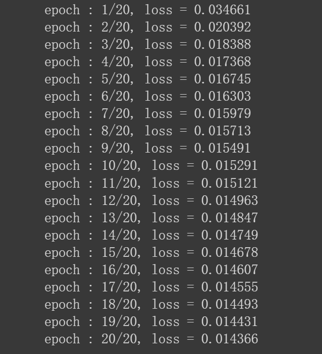
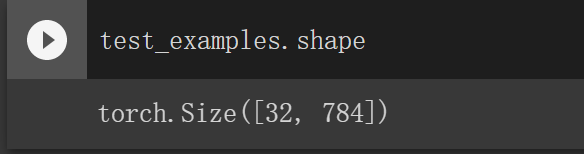

自编码器的结构 自编码器(Auto Encoder)是一种神经网络模型。它由两部分组成：编码器(Ecoder)和解码器(Decoder)。
编码器 用于将输入数据(Input Data)进行编码，从而将输入数据映射到维度较低的隐空间(Latent Space)，得到被编码的数据(Encoded Data)。
解码器 用于将隐空间中被编码的数据还原(解码)成”输入数据”。这里之所以打引号，是因为还原得到的”输入数据”相比于一开始的输入数据来说会有一些损失，所以并不是真正意义上的输入数据。
下图展示了自编码器的结构
自编码器的应用 数据降维/特征提取 从自编码器的结构很容易想到它的这一用途。在训练阶段，$X$经过编码器映射得到低维的$z$，$z$通过解码器还原出与$X$维度一致，内容相似的$X’$，通过反向传播来更新网络权重，以最小化输入$X$与输出$X’$之间的损失。
其中的$z$便是降维后的数据，因为如果可以通过$z$还原出输入$X$,那么可以说$z$已经学习到了$X$的大部分特征。
同时，$z$是一个被高度压缩(降维)的输入数据的表示，所以也可以将自编码器看作一个特征提取器，提取到的特征表示就是$z$。
图像去噪 图像去噪，就是去除图像上的噪点。比如下图中左半部分是无噪点的图像，而右半部分是有噪点的。我们的目标是训练一个自编码器，它的输入是有噪点的图像，而输出是去噪点后的图像，这样就达到了去噪的目的。
训练方法也很简单。准备一些无噪点的图像$X$，然后手动给这些图像添加噪点得到对应有噪点的图像$X_{noise}$。将$X$输入编码器，然后再经解码器得到输出$X’$，通过反向传播更新权重，以最小化$X’$和$X$之间的损失。这样，输出的$X’$会接近无噪点的$X$，这就达到了降噪的目的。
在应用中，只需将有噪点的图像输入训练好的自编码器，就可以得到无噪点的输出图像了。
图像“生成” 其实关于图像“生成”的介绍已经包含在前面两个应用的介绍中了。去除训练好的自编码器中的编码器，剩余部分就可以看作是一个”生成器”。输入隐空间的一个低维特征表示$z$，通过解码器就可以得到一张生成的图片。
但是，有一个问题。以图片为例，将之前编码后的隐空间特征$z$输入给解码器，解码器会输出和$z$对应的输入相似的图片，而如果我们尝试将与隐空间特征维度一致的随机噪声输入解码器，那么得到的将是无意义的噪声图片。
因此，这里的”生成”并不是真正意义上的生成，更准确的说应该是“重建”。
变分自编码器可以弥补这一缺陷，这一点将在后续文章中进行讨论。
用 Pytorch 写个自编码器 现在，使用手写数字数据集训练一个自编码器。
手写数字数据集本来是若干张$128 28$的图片，这里我们训练的是全连接神经网络，因此使用的是打平(flatten)后的$128 28=784$维的特征。也就是说，如果有$N$张图片，那么我们数据的shape就是$N$行$784$列。
首先导入所需库：
1 2 3 4 5 6 import torchimport torch.nn as nnimport torch.optim as optim import torchvisionimport matplotlib.pyplot as pltimport numpy as np
然后准备手写数字数据集：
1 2 3 4 5 6 7 8 9 10 11 12 13 14 15 16 17 transform = torchvision.transforms.Compose([torchvision.transforms.ToTensor()]) train_dataset = torchvision.datasets.MNIST( root="torch_datasets" , train=True , transform=transform, download=True ) test_dataset = torchvision.datasets.MNIST( root="torch_datasets" , train=False , transform=transform, download=True ) train_loader = torch.utils.data.DataLoader( train_dataset, batch_size=128 , shuffle=True , num_workers=4 , pin_memory=True ) test_loader = torch.utils.data.DataLoader( test_dataset, batch_size=32 , shuffle=False , num_workers=4 )
上述代码会自动从网络下载数据集到你指定的root路径下。
接下来搭建自编码器网络：
1 2 3 4 5 6 7 8 9 10 11 12 13 14 15 16 17 18 19 20 21 22 23 class AE (nn.Module ): def __init__ (self, **kwargs ): super ().__init__() self.encoder_hidden_layer = nn.Linear( in_features=kwargs["input_shape" ], out_features=128 ) self.encoder_output_layer = nn.Linear( in_features=128 , out_features=128 ) self.decoder_hidden_layer = nn.Linear( in_features=128 , out_features=128 ) self.decoder_output_layer = nn.Linear( in_features=128 , out_features=kwargs["input_shape" ]) def forward (self, features ): activation = torch.relu(self.encoder_hidden_layer(features)) code = torch.relu(self.encoder_output_layer(activation)) activation = torch.relu(self.decoder_hidden_layer(code)) reconstructed = torch.relu(self.decoder_output_layer(activation)) return reconstructed
再设置一些参数：
1 2 3 4 5 6 7 8 9 10 11 12 13 14 15 16 seed = 42 torch.manual_seed(seed) torch.backends.cudnn.benchmark = False torch.backends.cudnn.deterministic = True epochs = 20 learning_rate = 1e-3 device = torch.device("cuda" if torch.cuda.is_available() else "cpu" ) model = AE(input_shape=784 ).to(device) optimizer = optim.Adam(model.parameters(), lr=1e-3 ) criterion = nn.MSELoss()
开始训练：
1 2 3 4 5 6 7 8 9 10 11 12 13 14 15 16 17 18 19 20 21 22 23 24 25 26 27 28 29 for epoch in range (epochs): loss = 0 for batch_features, _ in train_loader: batch_features = batch_features.view(-1 , 784 ).to(device) optimizer.zero_grad() outputs = model(batch_features) train_loss = criterion(outputs, batch_features) train_loss.backward() optimizer.step() loss += train_loss.item() loss = loss / len (train_loader) print ("epoch : {}/{}, loss = {:.6f}" .format (epoch + 1 , epochs, loss))

训练完成之后，使用测试集的第一个batch进行测试：
1 2 3 4 5 6 7 8 9 10 11 with torch.no_grad(): for batch_features in test_loader: batch_features = batch_features[0 ] test_examples = batch_features.view(-1 , 784 ).to(device) reconstruction = model(test_examples) break

reconstruction包含了32张重建后的图片，每张图片都用784维的特征进行表示。现在来可视化对比一下重建前后的图片，注意对于重建后的图片，我们需要将其reshape回$128 28$。
1 2 3 4 5 6 7 8 9 10 11 12 13 14 15 16 17 18 19 20 with torch.no_grad(): number = 10 plt.figure(figsize=(20 , 4 )) for index in range (number): ax = plt.subplot(2 , number, index + 1 ) plt.imshow(test_examples[index].cpu().numpy().reshape(28 , 28 )) plt.gray() ax.get_xaxis().set_visible(False ) ax.get_yaxis().set_visible(False ) ax = plt.subplot(2 , number, index + 1 + number) plt.imshow(reconstruction[index].cpu().numpy().reshape(28 , 28 )) plt.gray() ax.get_xaxis().set_visible(False ) ax.get_yaxis().set_visible(False ) plt.show()
得到输出图片如下：
第一行是原始图片，第二行是第一行对应的重建后图片。可以看出，重建后的图片与原始图片轮廓基本一致，只是有一些损失，在图中表现为小黑点。
参考：
[1][https://medium.com/pytorch/implementing-an-autoencoder-in-pytorch-19baa22647d1] https://www.compthree.com/blog/autoencoder/] http://www.pgrady.net/music-compression-web/] https://towardsdatascience.com/denoising-autoencoders-explained-dbb82467fc2]